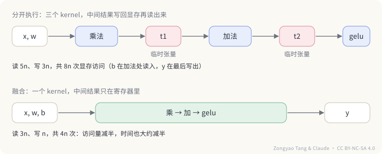

线索是：先看融合到底省了什么 → 哪些算子能融合在一起，哪些不能 → 训练时还有反向，融合掉的中间结果反向要用怎么办 → 编译器做不到的地方，有人手写了融合好的 kernel，你每天都在用。2.5 讲了编译器的流程，这一单元讲它做的最重要的一件事背后的道理。
第 4 部分 · 算子与 kernel4.2 算子融合
这一单元回答为什么同样的计算合在一起写就更快？编译器替你做了什么？
承接 3.1 的“三面墙”和 4.1 的算子分析：专门对付带宽受限和开销受限的那部分。2.5 讲过编译器的流程，这里看它做的最重要的一件事。
讲解
1算子融合：中间结果不落地
比如 y = gelu(x + b)。分开执行时，加法读 x、b 写出中间结果，gelu 再读中间结果写出 y；融合成一个 kernel 后，只读一次 x、b，写一次 y，中间结果一直留在寄存器里。
数一数读写次数。 以
y = gelu(x * w + b)为例，张量都有 n 个元素。分开执行（三个 kernel）：
- 乘法：读 x、w，写临时结果 t1。读 2n，写 n。
- 加法：读 t1、b，写 t2。读 2n，写 n。
- gelu：读 t2，写 y。读 n，写 n。
合计读 5n、写 3n，共 8n 次显存访问；还分配了两个临时张量。
融合成一个 kernel：每个线程读
x[i]、w[i]、b[i]，在寄存器里算完，写y[i]。读 3n、写 n，共 4n 次；没有临时张量。
同一个式子的两种执行方式 为什么几乎是等比例的提速。 3.3 讲过，逐元素运算的算术强度极低，时间由“搬了多少字节”决定，运算本身几乎不占时间。访问量从 8n 降到 4n，时间就大约减半。链越长，省得越多：k 个算子的链，中间结果的 2(k−1)n 次读写全部消失。
同时省掉的另外两样。
- kernel 的个数从 3 降到 1。每个 kernel 的启动都有固定开销（2.3），对小张量这一项甚至比读写更重要。
- 两个临时张量的显存，以及分配它们的时间。
所以融合同时对付了 3.1 三面墙里的两面：带宽和开销。它不改变算力那一面，矩阵乘法不会因此变快。
寄存器是关键。 融合之所以有效，是因为中间结果待在了离运算单元最近的地方（3.3 的存储层次），用完就丢。这是 0.1 里“把数据搬到近处，多用几次”最干净的例子：数据从显存搬进寄存器一次，在那里连续被用了三次。
谁来做融合。 三种来源，后面三节分别讲：编译器自动做（2.5 的 Inductor）；框架里手写好的大算子；你自己用 Triton 或 CUDA 写。
打个比方像流水作业：零件在工位之间直接传递，而不是每道工序做完都送回仓库再取出来。
所以 k 个连续的逐元素算子融合后，显存读写大约降到原来的 1/k；对带宽受限的部分，这几乎就是等比例的提速，还顺带省掉了 k−1 次 kernel 启动。
后面会用到 哪些能融合：一串逐元素的运算，加上它们后面的归约出处第 18 讲代码 add + relu 融合- 融合省的是中间结果的读写。那么，什么样的算子可以这样合在一起？
2哪些能融合：一串逐元素的运算，加上它们后面的归约
最容易融合的是逐元素的运算：每个输出元素只依赖各个输入里同一位置的元素。一串这样的运算可以合成一个 kernel，每个线程对一个位置把整串算完。紧跟在后面的归约（求和、求最大值）也能并进来。矩阵乘法、排序这类“每个输出依赖很多输入”的运算，通常是融合的边界。
按“输出依赖哪些输入”给算子分类。
- *逐元素*：
add、mul、exp、gelu、和标量的运算、类型转换。输出的第 i 个元素只看输入的第 i 个元素。广播也算（一个输入的元素被重复使用）。 - *归约*：
sum、mean、max、norm。很多输入元素合成一个输出。 - *全局依赖*：矩阵乘法、卷积、排序、注意力。每个输出依赖一大片输入。
逐元素的链。
y = gelu(x * w + b)是三步逐元素运算。融合后的 kernel 里，每个线程负责一个位置：读x[i]、w[i]、b[i]，在寄存器里乘、加、算 gelu，写y[i]。三步之间不需要任何线程间的配合，所以总是可以融合。逐元素加归约。 层归一化（LayerNorm）是典型：先求均值（归约），减去它（逐元素），平方后求均值得到方差（逐元素加归约），再除、再乘缩放加偏置（逐元素）。一个设计得好的 kernel 可以让每一行数据只从显存读一遍：线程们把这一行读进来，用 3.5 讲的并行归约算出均值和方差，再各自算出结果写回去。分开执行则要把这一行读写五六遍。
边界在哪。
- 矩阵乘法：它有专门的、高度优化的实现（4.5），编译器不会把它拆开和别的运算混在一起。所以典型的图是“矩阵乘法 → 一串可融合的运算 → 矩阵乘法”，融合发生在两次矩阵乘法之间。
- 一个中间结果被好几处用到，而且其中一处在很后面：这个结果必须落地存着，融合在这里断开（或者重算一遍）。
- 形状变了、需要先知道全部结果才能继续的运算（比如按掩码筛选，输出大小取决于数据）。
对着 4.1 的两类算子看。 4.1 把 Transformer 的算子分成算力受限的（矩阵乘法）和带宽受限的（其余）。融合对付的恰好是后一类。所以在一个大模型的训练里，融合能改善的是“矩阵乘法之外”的那部分时间；模型越小、这部分占比越高，融合的效果越明显。
Inductor 的做法大致也是这样：把图里的算子分解成基本运算，再把能合并的逐元素运算和归约尽量合进同一个循环，生成一个 Triton kernel。
打个比方像流水线上的几道工序：如果每道工序都只处理手上这一个零件（拧螺丝、贴标签、检查），可以交给同一个工人一口气做完；如果某道工序要把一整批零件摆在一起比较（挑出最大的），就得先攒齐一批，前后的工序在这里断开。
所以一个模型能从融合里得到多少好处，取决于它有多少“连成串”的逐元素运算。归一化、激活函数、残差相加、位置编码都属于这一类，它们正是带宽受限的那部分。
后面会用到 训练时的融合：被融合掉的中间结果，反向要用怎么办- *逐元素*：
- 前向里，中间结果不落地是纯粹的好事。但训练还有反向。
3训练时的融合：被融合掉的中间结果，反向要用怎么办
2.2 讲过，反向需要前向的一些中间结果。可是融合的意思恰恰是这些中间结果不落地。办法有两个：把反向真正需要的那几个保存下来，其余的不存；或者干脆都不存，反向时从输入重算一遍。对逐元素的运算，重算很便宜，常常比“写回显存、反向时再读出来”还快。
问题。 还是
y = gelu(x * w + b)。即时执行时，autograd 在乘法、加法、gelu 三个节点里分别保存了反向要用的张量（2.2）。融合成一个 kernel 之后，x * w和x * w + b这两个中间结果只在寄存器里存在过一瞬间。把前向和反向一起看。 2.5 讲过，AOTAutograd 先得到一张包含前向和反向的联合图，再切成两半。切的位置决定了“哪些量从前向传给反向”。对上面的例子，反向实际需要的是：
x和w（乘法的梯度要用）、以及 gelu 的导数在每个位置的值。x和w本来就是输入，一直在显存里，不用额外保存。- gelu 的导数依赖
x * w + b。两个选择：前向时把它写回显存留给反向；或者反向时从x、w、b再算一遍。
重算为什么可能更快。 带宽受限的运算里，时间花在读写显存上，计算本身几乎不要钱（3.3 的算术强度）。
- 保存：前向多写一个张量，反向多读一个张量。两次显存访问。
- 重算：反向时多做一次乘加。而
x、w、b反向时本来就要读（算梯度要用），所以没有增加显存访问。
于是重算在时间上不亏，还省了显存。PyTorch 2 的论文提到，切分联合图时会倾向于让反向重算那些便宜的量。
这是一个反复出现的选择。 把同样的问题放到不同的尺度上：
- 一个融合 kernel 内部：重算几步逐元素运算。
- 4.4 的 Flash Attention：反向时重算一块注意力矩阵，而不是保存 N×N 的结果。
- 2.2 的 activation checkpointing：反向时重算一整段网络的前向。
三者都是 0.1 里的“用计算换存储”。判断值不值的标准也一样：重算的那部分是不是带宽受限的（是：几乎免费），以及省下的显存有多大。
打个比方像心算一道多步的算术题：中间结果不用都写在纸上。事后要用到某一步的结果，重新算一下比翻草稿纸还快。
所以融合不只是前向的事。编译器把前向和反向放在一起考虑，决定哪些中间结果值得保存，这也是 2.5 里 AOTAutograd 那一层的工作之一。
出处PyTorch 2 论文 第 8 页 联合图的切分：保存还是重算- 编译器的融合是通用的。对几个特别重要的模式，还有更直接的办法。
4编译器之外：你每天在用的手写融合 kernel
有些融合模式太重要，或者太特殊，不等编译器来做，直接有人手写成了一个 kernel。缩放点积注意力（背后是 Flash Attention）、fused 优化器、把最后的线性层和交叉熵损失合在一起的 kernel，都是这样的例子。调用它们，不开 torch.compile 也能拿到融合的好处。
缩放点积注意力。
torch.nn.functional.scaled_dot_product_attention(q, k, v)一个函数完成了“矩阵乘法、缩放、加掩码、softmax、dropout、再矩阵乘法”。在 GPU 上它背后可以是 Flash Attention 的实现（4.4）。如果你自己写成五六行，即时执行时每一行都是单独的 kernel，中间那个 N×N 的矩阵要在显存里进出好几次。这是融合里收益最大的一个，因为被省掉的中间结果是平方规模的。它也说明了编译器的局限：Flash Attention 不只是把几个算子挤进一个 kernel，它改变了计算的顺序（分块、在线 softmax），这种改写目前靠人来设计。fused 优化器。 2.6 讲过：把 Adam 的十来步逐元素运算写进一个 kernel，每个参数只读写一遍。
线性层加交叉熵。 语言模型的最后一步是把隐藏状态乘以一个很大的矩阵（词表大小 × 隐藏维度），得到每个位置在整个词表上的分数，再算交叉熵。这个分数张量的大小是 batch × 序列长度 × 词表大小，常常是整个模型里最大的一个中间结果，而它算完损失就没用了。把这两步融合，按块计算分数、立刻算出损失和梯度、不保留完整的分数张量，能省下大量显存。GPU MODE 第 28 讲介绍的 Liger Kernel 做的就是这一类事情，用的是 Triton。
归一化层。
F.layer_norm、F.group_norm等都是单个算子，内部一次完成，而不是“求均值、减、求方差、除”几个算子的组合。从中得到的写法建议。
- 有现成的大算子就用它，别用小算子重新拼。
- 自己拼的运算如果出现在热点路径上，先看 torch.compile 能不能把它融合好（2.5 的日志能看到生成的 kernel）。
- 两者都不行、profiler 又显示它确实是瓶颈，才考虑自己写一个融合的 kernel。下一单元的 Triton 就是做这件事最省力的工具。
这也是第 3、4 部分要学 kernel 的实际理由：你多半不会去重写矩阵乘法，但很可能会遇到一个“库里没有、编译器又融合不好”的运算组合。
打个比方像餐厅里的预制高汤：通用的流程是每道菜现熬，但最常用的那几种汤，早就有人按最好的方子大锅熬好了，直接取用。
所以写模型时，优先用框架提供的“大”算子，而不是自己用小算子拼。它们往往是专门融合过的；自己拼出来的版本，要指望编译器重新发现这个模式，不一定能做到同样好。
出处PyTorch 文档：scaled_dot_product_attentionFlashAttention 论文 第 2 页 图 1 融合的注意力 kernelLiger Kernel（Triton 写的融合 kernel 集合）
串起来
融合把几个算子合成一个 kernel，中间结果留在寄存器里，不写回显存。逐元素的运算和它们后面的归约可以融合；矩阵乘法通常是边界。反向需要的中间结果要么保存、要么重算。编译器覆盖不到的模式，靠手写的融合 kernel：缩放点积注意力、fused 优化器都是。
考考自己
不看讲解，用自己的话讲一遍。
- 算子融合省掉的是什么？为什么对带宽受限的算子，融合几乎是等比例的提速？
- 哪些类型的算子容易被融合？为什么矩阵乘法通常是融合的边界？
- 融合后的中间结果不再保存，反向传播需要它们时怎么办？为什么重算有时比保存更快？
- 举出几个手写的融合 kernel 的例子。为什么建议优先使用框架提供的“大”算子？
术语
- operator fusion
- 算子融合
- graph break
- 图断点
- TorchInductor
- Inductor 编译器